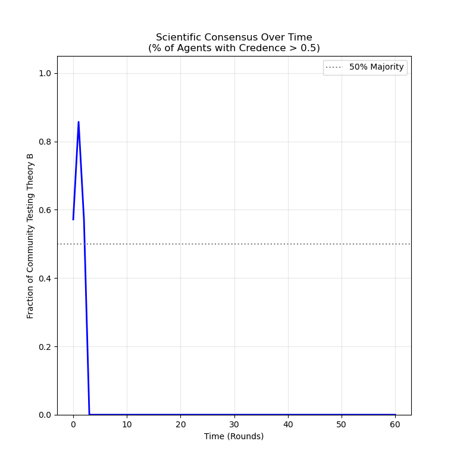
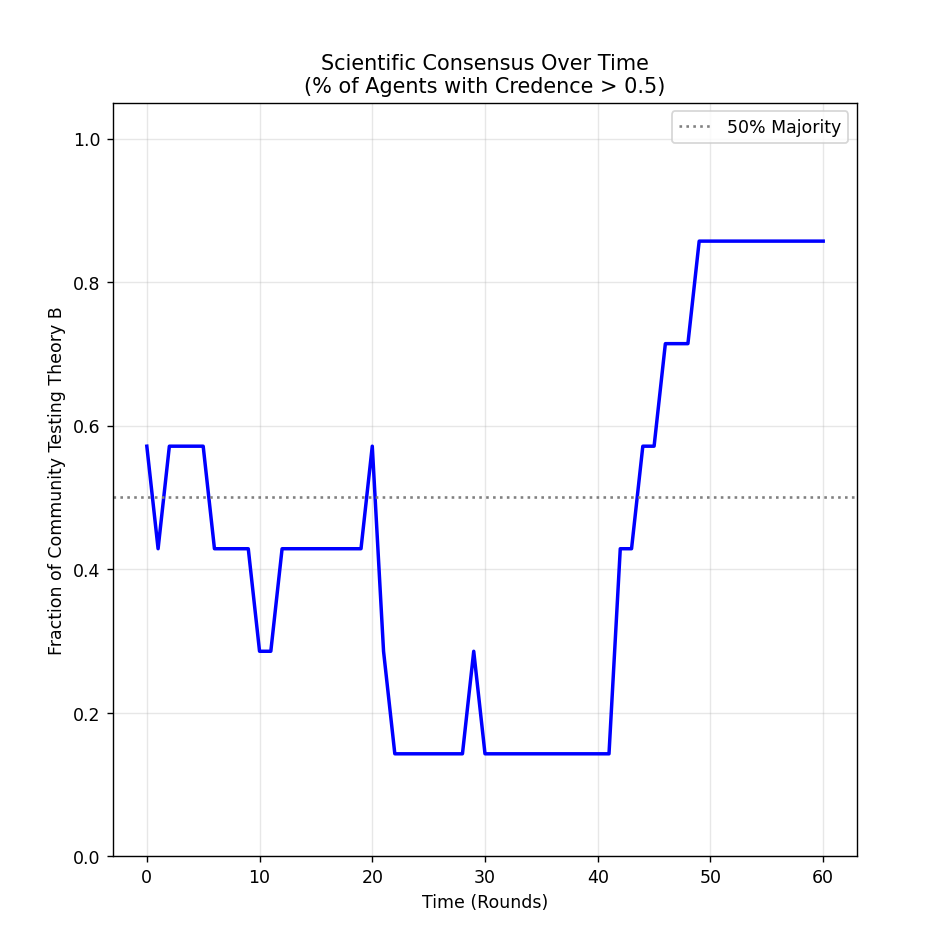
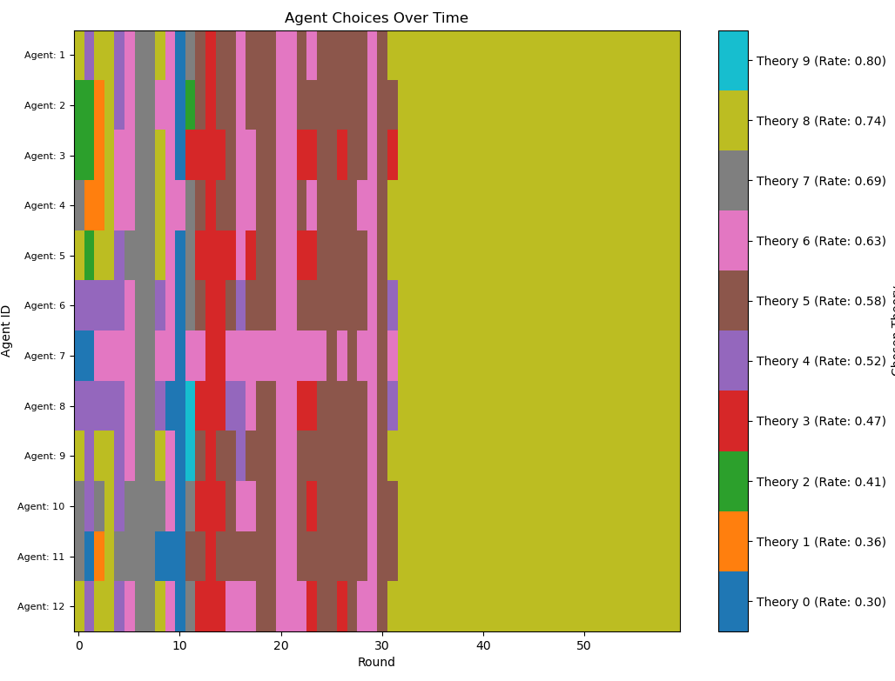
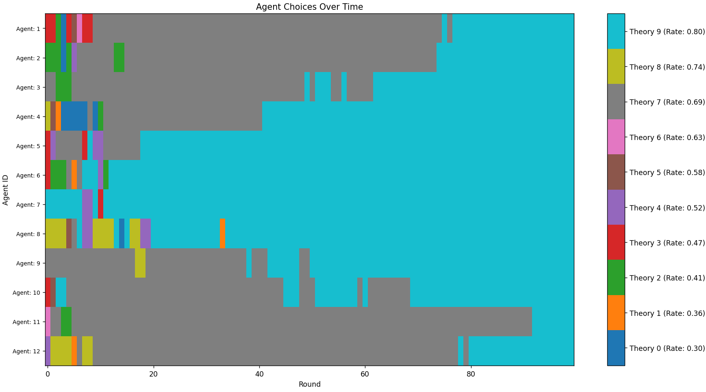
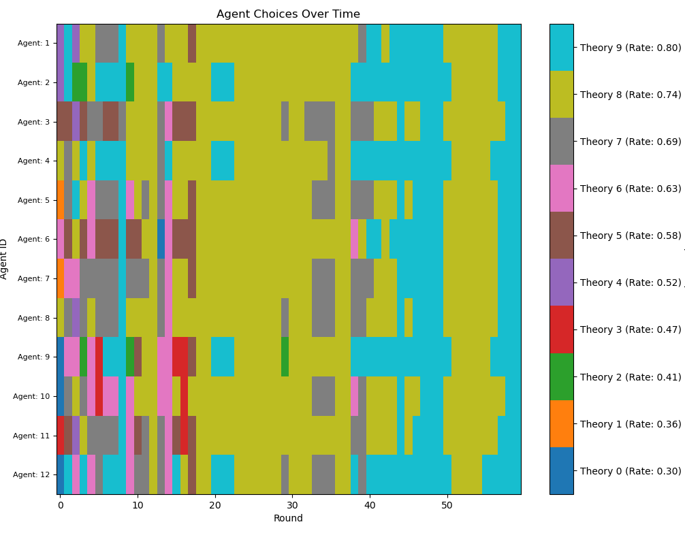
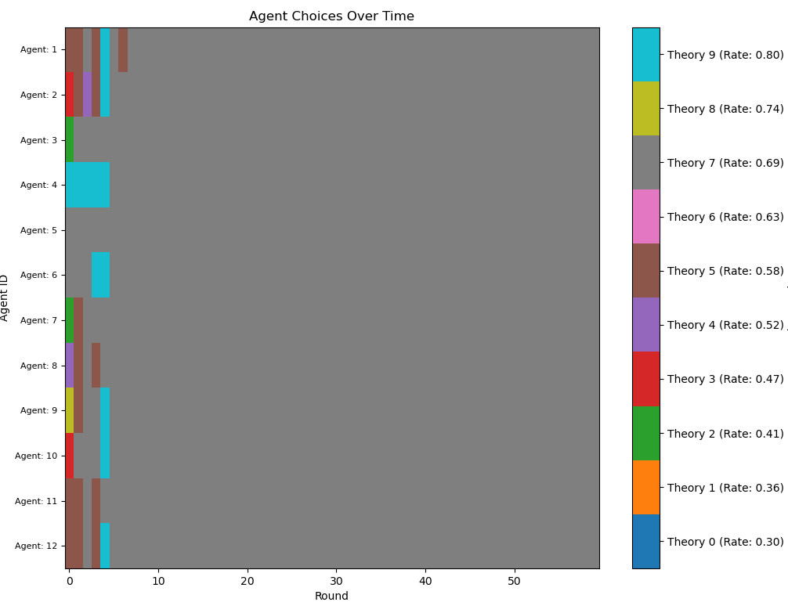
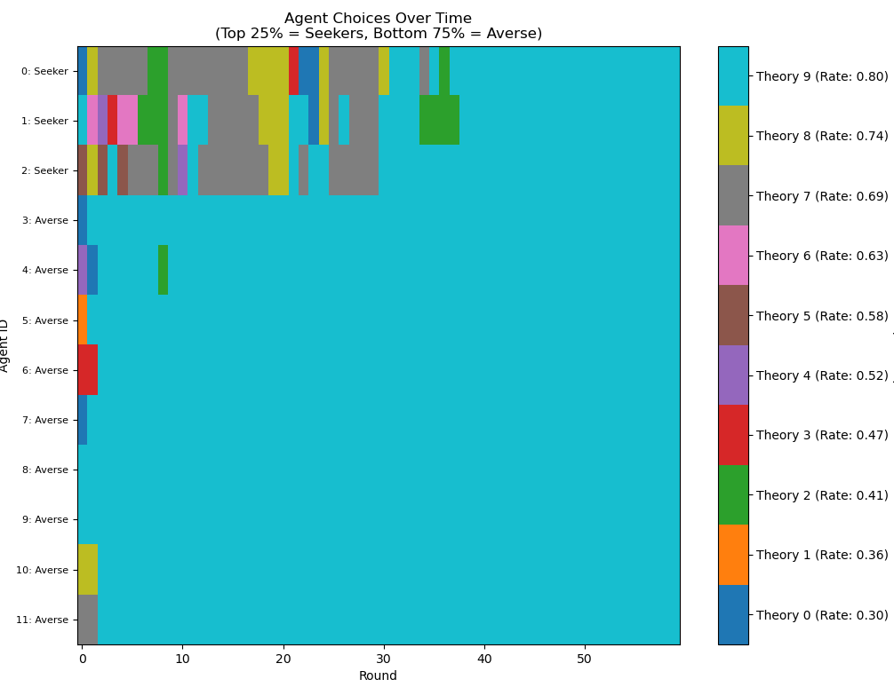
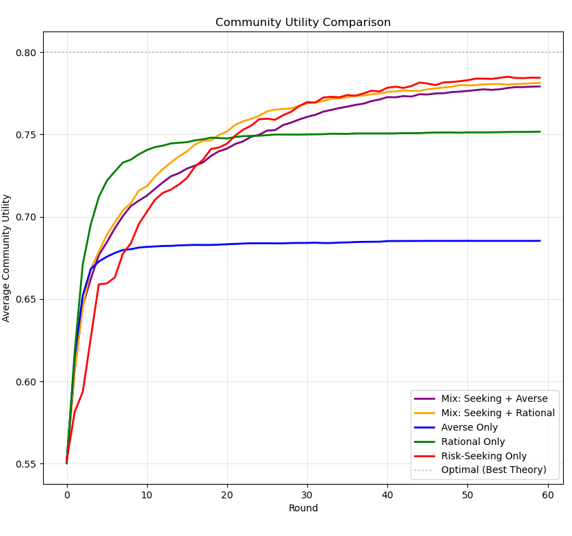
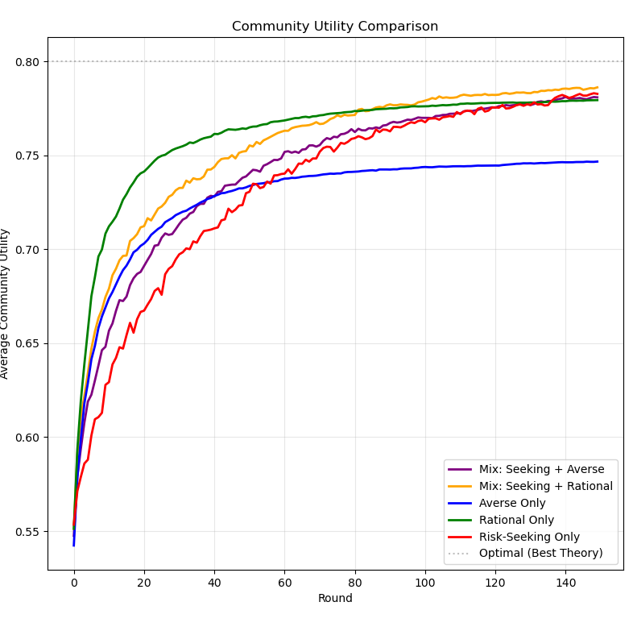

Exploring ABMs
A little danger is all you need
It all begins like this:
Every round, each agent runs a series of experiments. The goal is to see if theory B is better than theory A. Theory here is a slight misnomer, think of them more like techniques - like methods of surgery. In performing an experiment, an agent is simultaneously relying on it while also testing its efficacy. In this sense, the agents are not pure truth seekers but rather utility maximisers in an environment where we assume utility corresponds with truth. This is the Bala-Goyal model.
The agents determine the expected value using the mean of the beta-binomial distribution. This has some technicalities surrounding it, which we'll utilise later, but the mean for now can be described quite intuitively.
If we tossed some object like a weighted die 100 times, and 40 out of those 100 times it landed on 6 - what probability should we rationally ascribe to it landing 6 again? It appears it should just be the total number of occurrent 6s divided by the total number of trials. i.e., 40/100, which is equal to 0.4. The same logic applies to the beta-binomial mean: for each agent, the expected value of each theory \(T\) is equal to:
\[\hat{\mu}_T = \frac{\alpha_T}{\alpha_T + \beta_T}\]
Where \(\alpha_T\) is the total number of successes produced by a theory, and \(\beta_T\) the total number of failures elicited by the same theory. Well, to be more accurate, to prevent a division by zero at the beginning of the simulation, we randomly assign pre-experimental alpha and beta priors to all agents. These act as "pseudotrials."
Technique A has a success rate known to the agents (0.5), while technique B has a success rate they must determine (0.6). We model our agents as "greedy." That is, they test the theory they determine to have the highest expected value based off past experiments. Agents don't merely see the results of their own experiments however: they also share their results with neighbours over a network. The topology of this network can vary in multitudinous and exciting ways - and is the principal object of study by Zollman in his paper "The Communication Structure of Epistemic Communities" (2007). His key finding, and what appears to be the key finding of the entire field, is that less-connected networks counterintuitively converge upon the best theory more regularly than highly connected networks.
Here are some examples of different network topologies (from Wikipedia):

Figure 1: A Complete graph. Every node is connected to every other node.
Information spreads quickly in highly connected networks: if theory B fails for somebody, lots of people hear about it. Conversely, networks represented by graphs like the cycle have much less communication, each agent having much fewer neighbours.

Figure 2: A Cycle graph. Every node is connected to exactly two other nodes.
One might reasonably expect that more communication, and thus using complete graphs in our model, is effective for knowledge gathering. However, embed the logic we have been discussing in a python simulation and something rather interesting occurs:

Figure 3: The result of a simulation run with a complete network topology. Belief in theory B gains some early traction before all agents suddenly switch to using inferior theory A.
At first glance, this is a surprising result! In slightly less than half of runs - when priors are set low and the number of agents is small (here I am using seven) - agents in fully connected social networks settle upon the worse theory. Compare this result to a typical simulation using a cycle network:

Figure 4: The simulation using a cycle network topology. Belief in theory B slowly but steadily becomes predominant.
In contrast to complete graphs, minimally connected networks like the cycle almost always converge upon theory B - only much slower. This result points towards something important: if B is only marginally better than the alternative A, a lot of evidence must be gathered before we can reliably differentiate between them. Unfortunately, our agents are greedy - they are bound to use only what they have observed to be the best up to that point. Due to random chance, in the early rounds of the simulation, it is possible that users of theory B get an unlucky sequence of failures which temporarily make B appear to have a success rate below 0.5. The nature of a complete network means that all agents hear about these failures, and so switch from B to theory A. But by the time this has happened, nobody is testing theory B anymore - no more information is gathered about it - and so agents remain stuck using theory A forever.
It is precisely the lassitude of less-connected networks which avoids this problem. If an individual agent gets unlucky using theory B, somebody at the other side of the network knows nothing about it. They just keep on plugging away. This gives theory B far more opportunities to shine before any theory reaches consensus - making cycle networks slowly, but consistently, converge on B. This is the Zollman effect.
The effect is only really significant under epistemically taxing conditions where agents are very "jumpy". If the network has significantly more agents, or B is much more obviously superior, fully connected networks become far more reliable at determining the best theory: more information comes in quicker. Likewise, if you make agents more obstinate in their starting opinions (by setting the number of "phantom trials" to be much higher) more data must be gathered to change anybody's opinion, which always works in B's favour. Whether or not these conditions actually express themselves in scientific communities is unclear (are scientists even greedy? This is a question I'll touch on later). But my conception of science may be unfairly physics-centric - it doesn't seem impossible that these conditions could manifest in other kinds of epistemic communities. I keep on drawing medical analogies for a reason - one can imagine a situation where a novel medical technique with a marginally better success rate gets written off because of some early unlucky failures.
Even so, the actual moral to draw from the Zollman effect is murky. If we organise our medical networks to be as unconnected as possible (whatever that actually looks like), practitioners may spend a longer time using a bad theory than strictly necessary in exchange for the assurance of eventually learning about a better theory. On the other hand, maybe if the effect only manifests between theories which are marginally different, the transient inefficiency doesn't matter.
I think maybe its worth pausing to consider what we are actually trying to find out here with models. After designing a few models myself, I've noticed how easy it is to go in with the intention of proving a particular result. For example, I really wanted to show that listening to your out-group more than your in-group improved epistemic outcomes for the community. I had a certain politically-motivated vision of society where this was the ideal, and I felt it was empirically validated. Lo and behold, I then built a model which proved my thesis! But, the problem was this: motivated by the need to disprove homophily, the assumptions I had used in my model almost presupposed the conclusion. Unfortunately, the result was not robust, and did not continue across different reasonable setups. Ultimately, I don't think I produced any kind of explanation with my model.
It is commonly asserted that a model provides a proof-of-concept or a "how possibly" explanation, rather than an exhaustive description of a particular phenomenon. I agree, and I think this is what makes them interesting. I don't think we should make models targeting a hyper-specific phenomenon, but rather broad, abstract features which manifest themselves in a diversity of community setups. The "robustness" across modelling paradigms and parameter space, then, is really what matters. Models can be inspired by specific different kinds of empirical situation, but they cannot be justified by them. Case in point, Wu's "Epistemic Advantage on the Margin" (2023) paper was most certainly inspired and motivated by a need to vindicate "standpoint epistemology." However, unlike my out-group modelling, it only succeeds at doing so because the results are a manifestation of highly robust Zollman-like network effects which apply far beyond marginalised groups. Asymmetric information flow is structurally equivalent to a less-connected network.
All in all, I don't think you can exhaustively explain individual real-world phenomena with models (or justify models with real-world phenomena like out-group biasing), but models still nevertheless help us identify structural features of possible communities. My simile is this: models are like metaphors in the way they contribute to reasoning. A good metaphor has an unusual range of application, but can also get pushed too far. To this extent, I also think it is acceptable to model our scientists as greedy, as long as we are careful where we subsequently apply the metaphor.
Anyway, onwards and upwards! Let's explore some more models!
Extending to Multiple Theories
A natural extension of the Zollman model is to add more theories with differing rates of success. We remove the "given" theory A, and now establish utility of all theories with the beta binomial formula. In the following model, we have ten competing theories - with true rates ranging uniformly from 0.4 to 0.8 - and 12 agents testing them. I absolutely love this visualisation:

Figure 5: 12 agents' favourite of 10 theories over time in a connected network. Note the series of rapid changes.
We get behaviour which look almost identical to paradigm shifts! This happens when a theory gets lucky at the start and becomes ubiquitous (like in our two-theory model). It may happen, however, that the ubiquitous theory eventually comes to have a success rate lower than credence an agent has in their next-best option. This makes then switch. Their testing the alternative theory begins broadcasting new information to the rest of the community. If this new theory is apparently superior, it will create a cascade. The image I provided shows an especially colourful battle between pink and brown where this shifting happens four times. (Sadly, in vain, because yellow ends up sweeping them both away) I don't think this effect is technically Kuhnian - which is a highly nuanced social-linguistic theory of science - even if does have the same kind of information cascading effects which mark paradigm shifting. Herein lies the temptation of overextending our metaphors. If we had to put our agents in a Kuhnian framework, our agents are very much doing "normal science" - not revolutionising paradigms.
Also note how the best theory, light blue, does not win. Much like with the two-theory model, it often doesn't, and sometimes even quite bad theories like pink win. This is, again, a product of using a complete network. If we switch to a cycle, we see the robustness of the Zollman effect in action:

Figure 6: The same setup using a cycle network. Blue gradually comes to dominate (I had to increase the number of rounds for this).
Here, the transient diversity which marks the beginning state lasts longer: allowing better theories prove their mettle and take over.
My own small contribution to this field is based upon this multi-theory extension of the Zollman model. So, let's get into that.
Risk takers and Risk Aversion
My model is based on the multi-theory Bayesian model described above. After some experimentation with different ideas (in-group/out-group biasing, bounded rationality, etc) I found these results the most interesting.
The idea originates from the "Division of Cognitive Labour" idea. That is, the concept that it is epistemically advantageous for the community for different agents to have different priorities to each other. This idea was first modelled in "Epistemic Landscapes and the Division of Cognitive Labor" (2009). Epistemic landscapes are where agents are placed on a hilly surface - the height of which represents the success or "truth" of that position. The paper tried to show how a group of "mavericks" who deliberately avoided agents following nearby theories, added to a group of "followers" and "climbers", systematically improved group performance. My variation on this is that agents aren't divided between social and antisocial, but rather between risk-averse and risk-taking.
I want you to cast your mind back to the beta distribution. The mean gives us our best guess at the true success rate. But it doesn't tell us how confident we are in that guess. A scientist who's run 10 trials and a scientist who's run 10,000 trials might have the same mean estimate, but we'd trust the second one far more. This is what the variance captures: how spread out our uncertainty is around the mean. Low variance means the distribution is tightly concentrated and we're confident. High variance means it's spread out and we're uncertain. The variance is calculated with this formula (using standard beta distribution properties):
\[ \sigma^{2}_{T} = \frac{\alpha_T\beta_T}{(\alpha_T+\beta_T+1)(\alpha_T+\beta_T)^2}\]
I take the variance in this model to correlate to something along the lines of "the uncertainty in my assessment of this theory." It seems intuitive, that within a given community of scientists, there are going to be differences of temperament when it comes to this kind of uncertainty. Some - and I include myself in this category - will be averse to using a theory with a high variance. After all, it may turn out to be a bad theory. In which case, you have wasted time using a bad theory when you could be using another. Others may be more optimistic and have exactly the opposite reaction: maybe its a good theory, and so we should test it! Neither attitudes are strictly rational. My ABM seeks to model how homogeneous and heterogeneous communities consisting of these agents fare against each other and purely rational agents.
In my model, there are three types of character. The risk-taking, the risk-averse, and normal rational agent we met in our previous models. There is one parameter which controls all these agents' behaviour, \(\lambda\). The preference ordering, which was previously just the mean of each distribution, is now weighted according to variance and the value of \(\lambda\). That is:
\[U_{T} = \hat{\mu}_T \times (1 - \lambda \times 4\sigma^{2}_T)\]
(The 4 is there just to scale the variance to lie between 0 and 1, not 0 and 0.25.)
With this setup, positive \(\lambda\) makes the agents risk-averse. They will weight means with high variance lower. This makes them "exploiters." Negative \(\lambda\) does the opposite, and makes agents weigh means with high variance higher. This makes them "explorers" and means that they may pick theories with low means just because they are under-explored. Here are some examples of typical runs using these different agents. Each, apart from the new agents' attitude, uses all the same parameters as the previous model (in a complete network):

Figure 7: A community consisting only of risk-seeking agents (\(\lambda=-4\)). They absolutely love to shift, but usually settle on the best theory eventually.

Figure 8: A community consisting only of risk-averse agents (\(\lambda=4\)). They don't shift much, and tend to quickly settle upon a mediocre theory.
This alone provides some moderately interesting results. Communities consisting solely of risk seeking agents tend to do better in the long run than purely rational/averse agents, but worse in the short term. They spent a protracted time testing out garbage theories, but this allows them to eventually pick the best with confidence. Conversely, communities consisting of risk-averse agents can, in some conditions, actually perform better in the short term than their rational rivals (and certainly better than the risk-seeking) but tend to do far worse in the long term.
The most interesting setup of all, however, is a combination of the two: a community consisting of a majority of risk-averse agents, plus a small minority (25%) of risk takers:

Figure 9: A heterogeneous community of agents. The top three rows represent the pet theories of the risk-seeking, the rest of the risk-averse. Note how the risk-averse quickly settle upon the best theory, while the risk-seeking take some time to catch up.
I think this is amazing! Having even a small number of risk seekers among a community of risk-averse basically combines the best of both worlds. The long term results are almost as good as a fully risk-taking community (thus, better than the rational agents), while mitigating some of the early drawbacks. The risk-averse are essentially able to step away and "piggyback" off the results of the risk takers. Unfortunately, this is done at the expense of the risk takers themselves: the risk-averse settle on the best theory much earlier than the risk takers.
To illustrate this, I simulated each community configuration 1000 times - measuring the average utility of the entire community each round, and then averaging the averages. This graph sums up the results:

Risk-averse agents do well early on, but quickly plateau at mediocrity. Rational agents improve for longer but still nevertheless plateau. Meanwhile, risk-seeking agents do poorly at the start, but eventually become the most epistemically successful. What's interesting is that communities consisting of 25% risk takers and either risk-averse or rational agents both end up doing nearly as well as each other - it seems that the temperament of the majority of the scientific population doesn't matter much, as long as you have a few risk takers! Not only that, but mixed communities also, as indicated, avoid some of the early pitfalls of purely risk-taking agents. I think these are pretty cool results.
By the way, I ran the same simulation on a cycle network:

Figure 10: A graph displaying the efficacy of each epistemic community in a cycle network (I had to include three times the number of rounds).
Less-connected network topologies appears to exacerbate the drawbacks of risk-taking (the prolonged early exploration) while mitigating the benefits (superior final theory choice compared to rational agents). This points to something interesting. If we expect scientists, or at least some of them, to be curious creatures (which isn't exactly unreasonable) it seems that less-connected network topologies will actually in fact harm the scientific community contra Zollman. If not in the utility of the final theory, then in the speed in which we achieve that consensus on the best theory. If mavericks are going to get us there anyway - we should do nothing to impede the communication of their results.
I want to end this post with a final comment on how my model links to reinforcement learning, which I only found out after doing some more research.
This modelling paradigm is linked closely to a classic problem in computer science known as the Multi-Armed Bandit. Imagine a gambler standing in front of a row of slot machines (the "one-armed bandits"). Some machines pay out often, some rarely. The gambler has to decide: do I keep pulling the lever of the machine that has paid out the most so far (exploitation), or do I try a machine I haven't touched much yet to see if it's even better (exploration)? This is exactly the dilemma our agents face, but on a community level.
In the field of AI, one of the most popular ways to solve this is using an algorithm called Upper Confidence Bound (UCB). The core idea is that you shouldn't just look at the mean success rate of an option (which would be a "greedy" algorithm); you should also look at how uncertain you are about it. The standard formula looks something like this:
\[U_t = Q_t + c \sqrt{\frac{\ln t}{N_t}}\]
Where \(U_t\) is the utility of theory t, \(Q_t\) is the mean result of the theory so far (our \(\hat{\mu}_T\)), \(c\) is a confidence parameter (like our \(\lambda\)), \(t\) is the total number of rounds passed, and \(N_t\) is the number of times theory t has been used. This is, conceptually, not dissimilar to the variance weighting I did on the mean. Basically, the algorithm says: "This option has a low average, but we've barely tested it. That means the uncertainty bonus is high, so let's try it anyway." As we gather more data, N goes up, the bonus shrinks, and we rely more on the actual mean. My agents aren't quite so sophisticated as that, but there is certainly a similarity there.
Perhaps this re-frames what the scientific community may (optimally) be: a massive, distributed reinforcement learning system. Risk takers contribute to making that system closer to what AI research has discovered to be maximally efficient. Maybe also we can encourage RL-type behaviour with targeted kinds of funding grants, aimed at stimulating interest in high-variance, otherwise risky, research. I'm just spitballin' here though.
Thanks for reading!